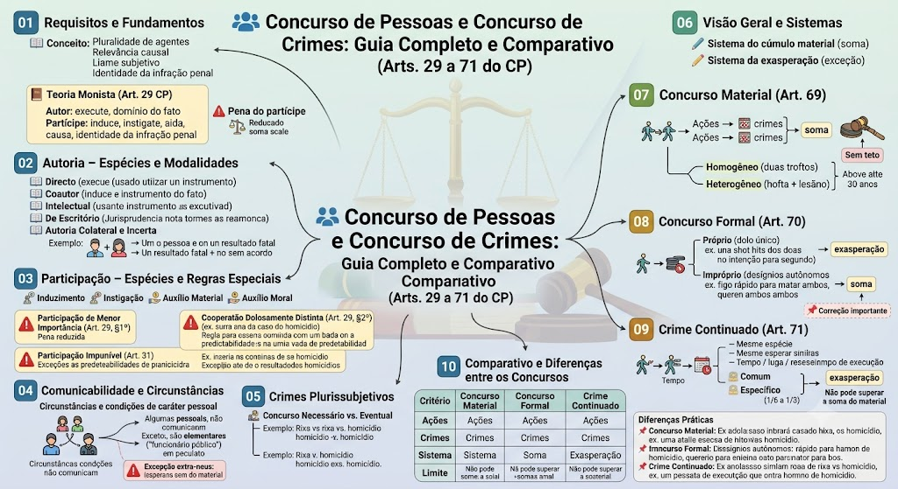

Regras do concurso de agentes (Arts. 29 a 31), autoria, participação, comunicabilidade, e do concurso de crimes (Arts. 69 a 71 do CP), com diferenças, sistemas de aplicação da pena e limites legais.
Concurso de Pessoas – Requisitos e Fundamentos
1. Pluralidade de agentes: dois ou mais sujeitos envolvidos.
2. Relevância causal das condutas: cada participação deve ter contribuído de forma relevante para o resultado (mesmo que moralmente).
3. Liame subjetivo (vínculo psicológico): acordo, ajuste ou consciência da colaboração (dolo de participação).
4. Identidade da infração penal: todos os agentes devem ter ciência do mesmo fato típico (não exige que o crime seja exatamente o mesmo na forma, mas que haja unidade de desígnios).
Adotada pelo Código Penal: todos os que concorrem para o crime incidem nas mesmas penas, na medida de sua culpabilidade.
Autor: quem executa a conduta típica ou tem o domínio do fato.
Partícipe: quem induz, instiga ou auxilia (moral ou materialmente).
Pena do partícipe: a mesma do autor, reduzida na medida de sua participação.
Autoria – Espécies e Modalidades
Autor direto (imediato): realiza pessoalmente a conduta típica.
Autor mediato: utiliza outra pessoa como instrumento (ex.: coação física, erro de tipo).
Coautor: executa a conduta em comunhão com outros, dividindo as tarefas.
Autor intelectual: planeja, organiza ou incita, mas não executa materialmente (quando sua contribuição é tão relevante que se equipara à autoria, ou quando o tipo penal exige qualidade especial – ex.: crime próprio).
Autor de escritório (domínio da organização): quem exerce o poder de decisão em estruturas organizacionais (ex.: chefes de organização criminosa), mesmo sem executar, responde como autor (teoria do domínio do fato – aceita pela jurisprudência).
Autoria colateral: duas ou mais pessoas, sem acordo, realizam condutas que causam o mesmo resultado. Cada um responde pelo seu ato (não há liame subjetivo).
Autoria incerta: quando não se pode identificar qual dos agentes causou o resultado (ex.: dois atiradores, uma só bala fatal, sem acordo entre eles).
Regra: Sendo impossível determinar o autor do resultado, a doutrina e a jurisprudência majoritárias não imputam o resultado consumado a todos. Cada agente responde, em regra, por tentativa do crime, salvo se houver prova de que ambos concorreram para o resultado (teoria da equivalência, mas com necessidade de comprovação do nexo). Se houver dolo comum (acordo), aí sim responde o grupo pelo resultado (aplica-se a teoria monista).
Participação – Espécies e Regras Especiais
Induzimento: influência intelectual que leva alguém a decidir cometer o crime (cria a ideia).
Instigação: reforço ou estímulo à decisão já existente (encoraja).
Auxílio material: ajuda concreta para a execução (ex.: fornecer arma, transportar).
Auxílio moral: apoio psicológico, promessa de ajuda posterior.
Se a participação for de menor importância (contribuição ínfima ou irrelevante), a pena pode ser reduzida de 1/6 a 1/3, mesmo que o crime se consume.
Exemplo: O agente que apenas vigia a entrada, mas não tem influência direta no resultado.
Ocorre quando o partícipe quer um crime menos grave, mas o autor pratica crime mais grave.
Regra: O partícipe responde pelo crime que pretendeu (desde que não houvesse previsibilidade do resultado mais grave). Se o resultado mais grave era previsível, responde pelo mais grave (teoria da previsibilidade objetiva).
Exemplo: A instiga B a dar uma "surra" em C (lesão corporal), mas B acaba matando C. Se A não previa a morte, responde por lesão corporal; se a morte era previsível, responde por homicídio culposo ou doloso, a depender.
Não são puníveis a instigação, o auxílio ou a determinação quando o crime sequer chega a ser tentado (ou seja, não há início de execução). O art. 31: "O ajuste, a determinação ou instigação e o auxílio, salvo disposição expressa em contrário, não são puníveis, se o crime não chega, pelo menos, a ser tentado."
Exceção: se a lei prevê a punição autônoma da participação (ex.: associação criminosa – art. 288).
Comunicabilidade e Circunstâncias
Circunstâncias e condições de caráter pessoal não se comunicam, salvo se forem elementares do crime.
Exemplos de incomunicáveis: reincidência, menoridade, motivo torpe ou fútil (se for circunstância pessoal), a condição de funcionário público no peculato (para o extraneus).
Quando se comunicam? Se a circunstância for elementar constitutiva do crime (ex.: no peculato, a qualidade de funcionário público é elementar; se o partícipe sabe da condição, responde pelo mesmo crime, mas a condição não se comunica ao partícipe – ele responde como partícipe do crime, não como autor).
Regra prática: As condições pessoais se comunicam apenas se inerentes ao tipo e conhecidas do partícipe.
Crimes Plurissubjetivos
Concurso necessário: o crime exige, para sua configuração, a participação de dois ou mais agentes (ex.: rixa – art. 137, bigamia – art. 235). A ausência de pluralidade descaracteriza o tipo.
Concurso eventual: o crime pode ser praticado por um único agente, mas admite concurso (ex.: homicídio, furto). A pluralidade é acidental.
Concurso de Crimes – Visão Geral e Sistemas
Sistema do cúmulo material: soma-se as penas de todos os crimes (art. 69).
Sistema da exasperação: aplica-se a pena do crime mais grave, com aumento proporcional (art. 70 e 71).
Regra: O sistema da exasperação é exceção à regra da soma (aplicável no concurso formal, próprio, e no crime continuado).
Concurso Material (Art. 69)
Conceito: Várias ações (ou omissões) independentes → vários crimes. A pena é obtida pela soma das penas de cada crime (cúmulo material).
Espécies:
- Homogêneo: todos os crimes são da mesma espécie (ex.: dois furtos).
- Heterogêneo: crimes de espécies diversas (ex.: um furto e uma lesão corporal).
Limite: Não há teto máximo na soma (pode ultrapassar 30 anos, se for o caso).
Concurso Formal (Art. 70)
Conceito: Uma única ação (ou omissão) → vários crimes.
- Próprio (ou perfeito): sem desígnios autônomos (dolo único, ação única e resultado múltiplo, sem vontade de atingir vários). Aplica-se a exasperação: pena do crime mais grave + aumento de 1/6 a 1/2.
- Ex.: Um único tiro, com dolo de matar uma pessoa, mas a bala acerta duas (sem intenção de matar a segunda).
- Impróprio (ou imperfeito): com desígnios autônomos (dolo direto para cada resultado, embora a ação seja uma só). Aplica-se o cúmulo material (soma das penas).
- Ex.: Agente dispara uma rajada única para matar A e B, querendo a morte de ambos.
📌 Correção importante: No JSON original, a classificação estava invertida. Agora está corrigida conforme o art. 70 e a doutrina majoritária.
Crime Continuado (Art. 71)
Conceito: Vários crimes da mesma espécie, praticados em condições semelhantes de tempo, lugar e maneira de execução, de modo que os subsequentes são considerados continuação do primeiro.
Requisitos:
- Mesma espécie: crimes que ofendem o mesmo bem jurídico e têm a mesma estrutura típica (ex.: furtos, homicídios).
- Condições semelhantes: tempo (proximidade cronológica, mas não necessariamente imediata), lugar (mesmo contexto) e maneira de execução (mesmo modus operandi).
- Comum: aplicável a qualquer crime, desde que preenchidos os requisitos.
- Específico (ou qualificado): previsto para crimes contra o patrimônio (art. 71, §1º, com redação dada pela Lei 13.964/2019 – Pacote Anticrime) quando as vítimas são diferentes e a violência é grave, o aumento pode ser de 1/6 a 1/3 (Súmula 443 do STJ já consolidava essa limitação).
Pena: aplica-se a pena de um só crime (ou a mais grave), com aumento de 1/6 a 2/3.
Limite: a pena final não pode ultrapassar a soma das penas que seriam aplicadas no concurso material (art. 71, parágrafo único).
Comparativo e Diferenças entre os Concursos
| Critério | Concurso Material | Concurso Formal | Crime Continuado |
|---|---|---|---|
| Ações | Várias | Uma só | Várias |
| Crimes | Vários | Vários | Vários (mesma espécie) |
| Sistema | Soma (cúmulo) | Exasperação (próprio) ou Soma (impróprio) | Exasperação (aumento de 1/6 a 2/3) |
| Limite | Sem teto (soma integral) | – | Não pode superar a soma do material |
Material: pluralidade de ações e de crimes → soma.
Formal: unidade de ação → pode ser soma (se desígnios autônomos) ou exasperação (se dolo único).
Continuado: pluralidade de ações e de crimes, mas com vínculo de continuidade (mesma espécie, semelhantes) → exasperação.
Exemplo prático:
- Furta um carro hoje e outro amanhã = continuado (mesma espécie, mesmo modus) → exasperação.
- Furta hoje e estupra amanhã = material → soma.
- Um tiro mata dois (sem querer o segundo) = formal próprio → exasperação.
- Um tiro mata dois (querendo ambos) = formal impróprio → soma.
Material de estudo: Concurso de Pessoas e Concurso de Crimes
Material complementar · Ver fonte no GitHub
Concurso Formal (Art. 70)
Concurso Formal – Conceito e Diferenças
Conceito: Uma única ação (ou omissão) → vários crimes.
Espécies:
- Próprio (ou perfeito): sem desígnios autônomos (dolo único, ação única e resultado múltiplo, sem vontade de atingir vários). Aplica-se a exasperação: pena do crime mais grave + aumento de 1/6 a 1/2.
- Ex.: Um único tiro, com dolo de matar uma pessoa, mas a bala acerta duas (sem intenção de matar a segunda).
- Impróprio (ou imperfeito): com desígnios autônomos (dolo direto para cada resultado, embora a ação seja uma só). Aplica-se o cúmulo material (soma das penas).
- Ex.: Agente dispara uma rajada única para matar A e B, querendo a morte de ambos.
📌 Correção importante: No JSON original, a classificação estava invertida. Agora está corrigida conforme o art. 70 e a doutrina majoritária.
Crime Continuado (Art. 71)
Crime Continuado – Conceito e Requisitos
Conceito: Vários crimes da mesma espécie, praticados em condições semelhantes de tempo, lugar e maneira de execução, de modo que os subsequentes são considerados continuação do primeiro.
Requisitos:
- Mesma espécie: crimes que ofendem o mesmo bem jurídico e têm a mesma estrutura típica (ex.: furtos, homicídios).
- Condições semelhantes: tempo (proximidade cronológica, mas não necessariamente imediata), lugar (mesmo contexto) e maneira de execução (mesmo modus operandi).
Espécies:
- Comum: aplicável a qualquer crime, desde que preenchidos os requisitos.
- Específico (ou qualificado): previsto para crimes contra o patrimônio (art. 71, §1º, com redação dada pela Lei 13.964/2019 – Pacote Anticrime) quando as vítimas são diferentes e a violência é grave, o aumento pode ser de 1/6 a 1/3 (Súmula 443 do STJ já consolidava essa limitação).
Pena: aplica-se a pena de um só crime (ou a mais grave), com aumento de 1/6 a 2/3.
Limite: a pena final não pode ultrapassar a soma das penas que seriam aplicadas no concurso material (art. 71, parágrafo único).
Comparativo e Diferenças entre os Concursos
Mapa-mental
